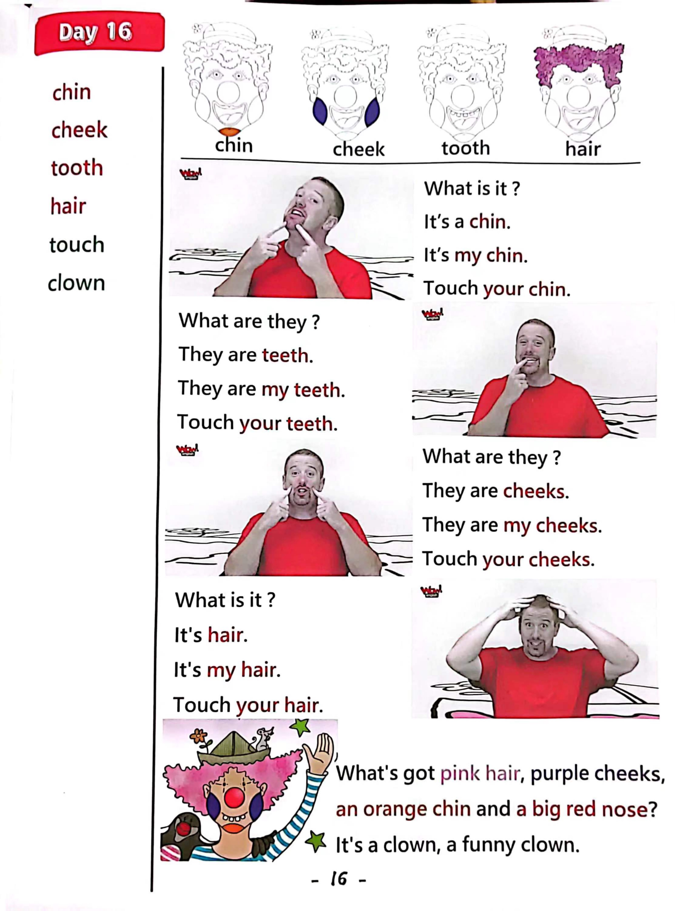

Day 16
Unit 5 · story
教材重点
教材重点依据网盘文件“第三级红色每日打卡全.pdf”，PDF 第 18 页对应 Day 16；以原图为准，避免对图片文字做不可靠的自动识别。
网盘教材重点原图 · PDF 第 18 页对应 Day 16

Unit 5 · story · 5–6岁
hello · look · say · go
Hello, hello, hello, hello, everyone. Hello. Hello.
台词本为机器转写，可能存在识别误差；不等同于视频逐字原声。
详细内容
Part 1 核心词汇
必须掌握 · 4 个Part 2 跟读句型与句型拓展
左侧保留台词本原句，右侧为替换练习；拓展内容不是视频逐字台词。
Hello, hello, hello, hello, everyone. Hello. Hello.
Hello. Hello.
Everyone say, hello. Everyone.
Chin, cheeks, teeth and hair.
Maggie, I can't fly anyway, where are we What's that.
Part 3 台词本全文
来源：第3级台词本 · 016.Wow!Red - Unit 5 'face' - part 2 story_5_2.pdf。以下保留网盘 PDF 的机器转写文本，仅清理了文件路径页眉和空行。
Hello, hello, hello, hello, everyone. Hello. Hello.
Hello. Hello.
Everyone say, hello. Everyone.
Chin, cheeks, teeth and hair.
Oh,
Flight.
Maggie, I can't fly anyway, where are we What's that.
Hello,
Hey who what is it.
Hey, still, hi, maggie, what is it I don't know, I don't know.
Hey, why don't you fly up, look down and tell me what it is? Okay, off you go.
Hmm, what is it.
So Maggie.
What is it It's a chin What is it It's a chin?
Orange, that's strange. Hey, this.
Is my chin.
And you touch your chin and say,
It's a chin, it's a chin, it's a chin, come on, it's a chin, it's a chin, it's a chin, and again, it's a chin, it's a
chin, it's a chin.
Yeah, great, but this chin is orange, that's crazy.
Wait a minute, if that's the gin.
And this is a mouth yellow, hey, what's a big mouth? Oh,
HA, HA, look what's the crayon drawing.
I have a tooth, oh, and another one.
And another one, they are teeth.
These are mighty. Show me your teeth.
Let me see.
Yeah, cheese, yeah, so they are teeth.
Say with me, they, our teeth, they are teeth, they are teeth, they are teeth, they are teeth, they are
teeth. Hey, watch this.
They are teeth, they are teeth, they are teeth.
/
-
/3/016.Wow!Red - Unit 5 'face' - part 2 story_5_2.txt[2022/3/29
星期二
6:47:15]
What's that What is it It's purple What is it I don't know. Oh, let's ask Maggie.
Hey Maggie.
Look here, what? What is it.
It's a cheap, what is it It's a cheek, a cheek, yeah, I have so heavy look.
These are my cheeks.
Can you touch your cheeks, touch your cheeks One.
Two, yeah and say with me, they are cheeks, they are cheeks, they are cheeks, come on, they are
cheeks, they are cheeks, they are cheeks.
And again, they are cheeks. They are cheeks, they are cheeks, yea ha, ha,
But.
Purple cheeks, that's crazy, haste, yes, maggie, hold on, look at what's this.
What is it It's all pink.
Pink,
Oh, hey, I know, look, it's this.
Is my hair. So touch your hair, touch your hair, yeah, who say it's hair It's hair, it's hair.
It's hair, it's hair, it's hair, and again, it's hair, it's hair, it's hair here, great.
So what's got pink hair, purple, cheeks, an orange chin and a big, red nose?
I know.
It's a cloud, a funny, funny clown, yeah, steve.
Let's go to the circus, the circus, the circus stay.
Go to the circus. Yeah. The circus. Yeah.
Wow, what a crazy dream.
See you next time.
Yes, maggie, we'll go to the circus.